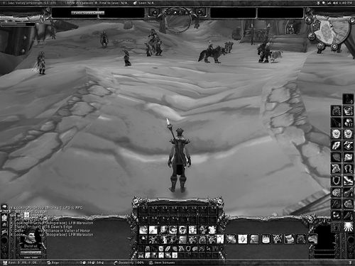
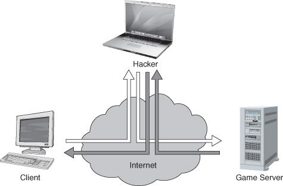
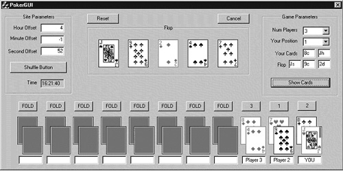

{% include JB/setup %}
{% raw %}
<div>
<a name="toppage" class="pcalibre calibre1"></a><table width="100%" border="0" cellspacing="0" cellpadding="0" class="sfbody"><tr valign="top" class="calibre2"><td class="calibre3"><a name="MainContent" class="pcalibre calibre1"></a><table width="95%" class="sfbody"><tr class="calibre2"><td class="pcalibre1 v"><!--Copyright (c) 2002 Safari Tech Books Online--><table width="100%" border="0" cellspacing="0" cellpadding="2" class="calibre4"><tr class="calibre2"><td valign="middle" class="v1 pcalibre1" height="5"></td></tr><tr class="calibre2"><td valign="middle" class="v1 pcalibre1"><table cellpadding="0" cellspacing="0" border="0" width="100%" class="calibre4"><tr class="calibre2"><td class="calibre6"><span class="calibre7"> </span>
                   
                  <span class="calibre7">   </span>
             <span class="calibre7"> </span></td></tr></table></td><td class="calibre8"/><td valign="middle" class="v2 pcalibre1"> 
           
          <span class="calibre7"><a target="_self" href="ch02lev1sec2.html" title="Previous section" class="pcalibre calibre1"></a></span>
				
				 
				
				<span class="calibre7"><a target="_self" href="ch02lev1sec4.html" title="Next section" class="pcalibre calibre1"></a></span></td></tr></table><div id="section" class="calibre15"><table width="100%" border="0" cellspacing="0" cellpadding="0" class="calibre4"><tr class="calibre2"><td valign="top" class="calibre8"><a href="10061538.html" class="pcalibre calibre1"></a>Security Game Programming Networking Programming Greg Hoglund Gary McGraw Addison Wesley Professional Exploiting Online Games: Cheating Massively Distributed Systems<a name="ch02lev1sec3" class="pcalibre calibre1"></a>
<h3 id="title-IDAVAFDG" class="docSection1Title">Tricks and Techniques for Cheating</h3>
<p class="docText"><a name="iddle1122" class="pcalibre calibre1"></a><a name="iddle1159" class="pcalibre calibre1"></a><a name="iddle1263" class="pcalibre calibre1"></a><a name="iddle1283" class="pcalibre calibre1"></a><a name="iddle1418" class="pcalibre calibre1"></a><a name="iddle1824" class="pcalibre calibre1"></a>There are many ways to cheat in an online game. Some of them don't require much in the way of computer programming skills at all. Colluding as a group in an online poker game against an unsuspecting fellow player is an example from the "just takes a telephone" camp. On the other hand, some cheats require deep programming skills.</p>
<p class="docText">In this chapter, we'll introduce you to some basic cheating concepts:</p>
<ul class="calibre18"><li class="calibre19"><p class="docText"><a class="pcalibre6 pcalibre5 calibre1" href="#ch02lev2sec1">Building a bot</a></p></li><li class="calibre19"><p class="docText"><a class="pcalibre6 pcalibre5 calibre1" href="#ch02lev2sec2">Using the user interface (UI)</a></p></li><li class="calibre19"><p class="docText"><a class="pcalibre6 pcalibre5 calibre1" href="#ch02lev2sec3">Operating a proxy</a></p></li><li class="calibre19"><p class="docText"><a class="pcalibre6 pcalibre5 calibre1" href="#ch02lev2sec4">Manipulating memory</a></p></li><li class="calibre19"><p class="docText"><a class="pcalibre6 pcalibre5 calibre1" href="#ch02lev2sec5">Drawing on a debugger</a></p></li><li class="calibre19"><p class="docText"><a class="pcalibre6 pcalibre5 calibre1" href="#ch02lev2sec6">Finding the future</a></p></li></ul>
<p class="docText">The end results of many of these approaches are now available for purchase online at a number of spurious Web sites. One example is the Pimp My Game Web site at &lt;<a class="pcalibre6 pcalibre5 calibre1" target="_blank" href="http://www.pimpmygame.org/">http://www.pimpmygame.org/</a>&gt;. The Web site, similar to many others like it, boasts the following:</p>
<blockquote class="calibre24">
<p class="docText">We give our users the chance to get Exploits, Bots, Hacks, Macros, Patches, Cheats and Guides for all usual MMORPGs and FPS Games that we support. Get them from our own downloads section and forums where you can discuss and debate. You will become more successful in your Game!</p>
</blockquote>
<p class="docText">Of course, we're more interested in understanding what goes on behind the curtain of these "Exploits, Bots, Hacks, Macros, Patches, Cheats, and Guides" than we are in buying them.</p>
<a name="ch02lev2sec1" class="pcalibre calibre1"></a>
<h4 id="title-IDASEFDG" class="docSection2Title">Building a Bot: Automated Gaming</h4>
<p class="docText">If you Google "online game bots," you'll amass impressive millions of hits. Most of the hits are for sites that offer to sell you a bot. But what is a bot really?</p>
<p class="docText">Bots are stand-alone programs that play a game (or part of a game) for you. The term originates from first-person shooter (FPS) games developed for the PC. The term derives from a ro<span class="docEmphasis">bot</span> that simulates another player in the game. You might play a game of chess against a bot, or you might battle a bot in an FPS game like DOOM.</p>
<p class="docText"><a name="iddle1139" class="pcalibre calibre1"></a><a name="iddle1165" class="pcalibre calibre1"></a><a name="iddle1166" class="pcalibre calibre1"></a><a name="iddle1172" class="pcalibre calibre1"></a><a name="iddle1176" class="pcalibre calibre1"></a><a name="iddle1268" class="pcalibre calibre1"></a><a name="iddle1342" class="pcalibre calibre1"></a><a name="iddle1366" class="pcalibre calibre1"></a><a name="iddle1776" class="pcalibre calibre1"></a><a name="iddle1794" class="pcalibre calibre1"></a><a name="iddle1863" class="pcalibre calibre1"></a><a name="iddle1864" class="pcalibre calibre1"></a><a name="iddle2186" class="pcalibre calibre1"></a>Today, the term <span class="docEmphasis">bot</span> is applied widely to a range of programs, from those as simple as a keyboard mapping that allows you to script together several common actions to those as complex as a player based on artificial intelligence (AI) that plays the game by following simple reasoning rules. In the FPS world, people use bots to perform superhuman actions (e.g., perfect aim). In the MMORPG realm, players use bots to automate the boring parts of play. We provide an example of a macro later in the chapter that controls a character in WoW, thus making that character a bot (temporarily at least).</p>
<p class="docText">In all cases, bots perform certain tasks better than humans. Maybe their understanding of chess logic is superior, or maybe they outplay human characters by knowing more about game state than a human can track, or maybe they just do repetitive tasks without getting bored. But whatever they're programmed to do, bots give cheaters an unscrupulous advantage.</p>
<p class="docText">Bots have even been used to rob other characters in a game. According to an article in the <span class="docEmphasis">New Scientist</span>:<sup class="docFootnote"><a class="pcalibre6 pcalibre5 calibre1" href="#ch02fn02">[2]</a></sup></p><blockquote class="calibre24"><p class="docFootnote1"><sup class="calibre31"><a name="ch02fn02" class="pcalibre calibre1">[2]</a></sup> "Computer Characters Mugged in Virtual Crime Spree," by Will Knight (August 18, 2005; see &lt;<a class="pcalibre6 pcalibre5 calibre1" target="_blank" href="http://www.newscientist.com/article.ns?id=dn7865">http://www.newscientist.com/article.ns?id=dn7865</a>&gt;).</p></blockquote>
<blockquote class="calibre24">
<p class="docText">A man has been arrested in Japan on suspicion of carrying out a virtual mugging spree by using software "bots" to beat up and rob characters in the online computer game Lineage II. The stolen virtual possessions were then exchanged for real cash. The Chinese exchange student was arrested by police in Kagawa prefecture, southern Japan.</p>
</blockquote>
<p class="docText">In a slightly less obvious fashion, online poker bots have been used to win poker games for their masters. Though professional-level play is not yet possible (because solving the problem involves creating legitimate AI that can pass the Turing test<sup class="docFootnote"><a class="pcalibre6 pcalibre5 calibre1" href="#ch02fn03">[3]</a></sup>), poker bots are good enough to win on basic tables with some regularity.<sup class="docFootnote"><a class="pcalibre6 pcalibre5 calibre1" href="#ch02fn04">[4]</a></sup></p><blockquote class="calibre24"><p class="docFootnote1"><sup class="calibre31"><a name="ch02fn03" class="pcalibre calibre1">[3]</a></sup> For more on the Turing test, see &lt;<a class="pcalibre6 pcalibre5 calibre1" target="_blank" href="http://en.wikipedia.org/wiki/Turing_test">http://en.wikipedia.org/wiki/Turing_test</a>&gt;.</p></blockquote><blockquote class="calibre24"><p class="docFootnote1"><sup class="calibre31"><a name="ch02fn04" class="pcalibre calibre1">[4]</a></sup> You can find an article from MSNBC about poker bots at &lt;<a class="pcalibre6 pcalibre5 calibre1" target="_blank" href="http://www.msnbc.msn.com/id/6002298/">http://www.msnbc.msn.com/id/6002298/</a>&gt;.</p></blockquote>
<p class="docText">In final analysis, bots have a mixed reputation. Some serious gamers deride them as a cancer ruining games and the gaming industry for everyone. Others see bots as extremely useful tools for delegating the boring aspects of play to a computer program. Still others see bots as a great way to make a living.</p>
<p class="docText">Game companies often deploy technical and legal countermeasures to detect and stop bot activity. Sometimes they keep play statistics about characters and notice when certain values go out of range (e.g., flagging <a name="iddle1656" class="pcalibre calibre1"></a><a name="iddle2199" class="pcalibre calibre1"></a><a name="iddle2209" class="pcalibre calibre1"></a><a name="iddle2215" class="pcalibre calibre1"></a><a name="iddle2216" class="pcalibre calibre1"></a>things when a character quadruples its wealth in one hour). Another common countermeasure is to ask a character questions to see how humanlike its responses are.<sup class="docFootnote"><a class="pcalibre6 pcalibre5 calibre1" href="#ch02fn05">[5]</a></sup> The <span class="docEmphasis">Korea Times</span> reports that in the MMORPG Lineage, at least 150 game minders monitor the game for use of bots and then ban players using them. The report states that 500,000 accounts had been suspended between 2004 and April 2006 because of bot activity.<sup class="docFootnote"><a class="pcalibre6 pcalibre5 calibre1" href="#ch02fn06">[6]</a></sup></p><blockquote class="calibre24"><p class="docFootnote1"><sup class="calibre31"><a name="ch02fn05" class="pcalibre calibre1">[5]</a></sup> In this case, the perfect MMORPG bot would need to be able to pass the Turing test.</p></blockquote><blockquote class="calibre24"><p class="docFootnote1"><sup class="calibre31"><a name="ch02fn06" class="pcalibre calibre1">[6]</a></sup> See &lt;<a class="pcalibre6 pcalibre5 calibre1" target="_blank" href="http://times.hankooki.com/lpage/culture/200605/kt2006052116201765520.htm">http://times.hankooki.com/lpage/culture/200605/kt2006052116201765520.htm</a>&gt;.</p></blockquote>
<a name="ch02lev2sec2" class="pcalibre calibre1"></a>
<h4 id="title-IDADMFDG" class="docSection2Title">Using the User Interface: Keys, Clicks, and Colors</h4>
<p class="docText">Games have outstanding UIs these days. Consider the UI from WoW shown in <a class="pcalibre6 pcalibre5 calibre1" href="#ch02fig01">Figure 2-1</a>. For an impressive and diverse collection of UIs for MMORPGs, see &lt;<a class="pcalibre6 pcalibre5 calibre1" target="_blank" href="http://xune-gamers.tripod.com/id3.html">http://xune-gamers.tripod.com/id3.html</a>&gt;.</p>
<a name="ch02fig01" class="pcalibre calibre1"></a><p class="calibre28"><center class="calibre29">
<h5 class="docFigureTitle">Figure 2-1. A WoW screenshot, demonstrating the state of the art in online game user interfaces.</h5>
</center></p><p class="docText"><div class="v8 pcalibre3 pcalibre2"><a target="_blank" href="fig02-01_alt.jpg" class="pcalibre calibre20">[View full size image]</a></div></p>
<br class="calibre15"/>
<p class="docText"><a name="iddle1054" class="pcalibre calibre1"></a><a name="iddle1118" class="pcalibre calibre1"></a><a name="iddle1260" class="pcalibre calibre1"></a><a name="iddle1480" class="pcalibre calibre1"></a><a name="iddle1587" class="pcalibre calibre1"></a><a name="iddle1588" class="pcalibre calibre1"></a><a name="iddle1664" class="pcalibre calibre1"></a><a name="iddle1938" class="pcalibre calibre1"></a><a name="iddle2035" class="pcalibre calibre1"></a><a name="iddle2211" class="pcalibre calibre1"></a><a name="iddle2218" class="pcalibre calibre1"></a>As you can see, UIs include parts of the screen that a user can interact with by using standard input devices. There are buttons, text windows, and pictures. You play the game by interacting with the UI—it's your window on what's going on.</p>
<p class="docText">Cheaters use the UI to cheat. Let's say a game has three buttons, A, B, and C, that you're only allowed to click manually yourself. By some game companies' definition, if you were to install a software automation tool (such as a quality assurance testing tool) that automatically clicks the mouse on x- and y-coordinates to drive these buttons, you would be cheating.</p>
<p class="docText">In many cases, EULA allowances and their associated enforcement mechanisms <span class="docEmphasis">restrict how you use the software</span>. That is, you're allowed to click on buttons yourself, but a program that you write is not. You can learn much more about EULAs in <a class="pcalibre6 pcalibre5 calibre1" href="ch04.html#ch04">Chapter 4</a>.</p>
<p class="docText">Controlling someone's use of the game like this seems rather extreme until you consider the economic impact of automated game play. In most cases, automated game play is realized by using special tools and scripts typically referred to as <span class="docEmphasis">macros</span>. For example, in WoW, monsters appear at specific locations on a periodic basis. You can easily write a macro that causes the in-game character to stand in that location and automatically kill the monster every time it appears (thus gaining experience points and virtual gold). Of course, you can do this manually yourself, waiting around all day for the monster to appear, but given that the monster appears only once every 10 minutes, that plan will commit you to a very long and boring night. Why not write a macro to wait around for you? Ultimately the question is, how can automating such a boring and repetitive activity be considered cheating?</p>
<p class="docText">WoW, and many MMORPGs like it, are so afflicted with repetitious game play that the players have invented a term to describe it: <span class="docEmphasis">grinding</span>. That is, doing awful, repetitive things all day with your character just to gain experience is likened to a mule going around and around on a treadmill, grinding grain into flour day in and day out. For some reason, players <span class="docEmphasis">enjoy</span> this self-inflicted misery and will pay $14 a month for the privilege of doing it. Why?</p>
<p class="docText">As it turns out, there is deep-seated human psychology at play here, and it has to do with living a double life, as well as the fact that grinding away like this brings economic reward. Whenever you kill that monster, it drops in-game play money and gives you other rewards, such as more experience, skills, and ultimately levels.</p>
<p class="docText"><a name="iddle1042" class="pcalibre calibre1"></a><a name="iddle1261" class="pcalibre calibre1"></a><a name="iddle1277" class="pcalibre calibre1"></a><a name="iddle1281" class="pcalibre calibre1"></a><a name="iddle1356" class="pcalibre calibre1"></a><a name="iddle1363" class="pcalibre calibre1"></a><a name="iddle1501" class="pcalibre calibre1"></a><a name="iddle1586" class="pcalibre calibre1"></a><a name="iddle1628" class="pcalibre calibre1"></a><a name="iddle1682" class="pcalibre calibre1"></a><a name="iddle1804" class="pcalibre calibre1"></a><a name="iddle1905" class="pcalibre calibre1"></a><a name="iddle1906" class="pcalibre calibre1"></a>If you write a macro to do this grinding for you by manipulating the UI, you can go away to work, or sleep, and come back later and have the sum of all the gold pieces and experience for all the repetitive monster kills waiting for you. Thus, the macro earns you in-game money and simultaneously increases your character's power—but without the associated boredom of actually paying attention. What a great idea! It's so great, in fact, that thousands of players do it all the time. There is even a special term used to describe players who play this way—they are called <span class="docEmphasis">farmers</span>.</p>
<p class="docText">The simple bot that we include later in the chapter uses UI manipulation to control a grinding character.</p>
<a name="ch02lev2sec3" class="pcalibre calibre1"></a>
<h4 id="title-IDAMXFDG" class="docSection2Title">Operating a Proxy: Intercepting Packets</h4>
<p class="docText">Interacting with a game through the client software by going through the UI is a straightforward cheating technique that is not hard to code. There are many more sophisticated methods, of course. One method involves operating a proxy between the game client and the game server. This proxy can intercept packets and alter them in transit. In other words, a proxy-based cheating scheme carries out what is in security circles known as an attacker-in-the-middle attack<sup class="docFootnote"><a class="pcalibre6 pcalibre5 calibre1" href="#ch02fn07">[7]</a></sup> (<a class="pcalibre6 pcalibre5 calibre1" href="#ch02fig02">Figure 2-2</a>).</p><blockquote class="calibre24"><p class="docFootnote1"><sup class="calibre31"><a name="ch02fn07" class="pcalibre calibre1">[7]</a></sup> This kind of attack is most often called a man-in-the-middle attack, but we find that terminology sexist.</p></blockquote>
<a name="ch02fig02" class="pcalibre calibre1"></a><p class="calibre28"><center class="calibre29">
<h5 class="docFigureTitle">Figure 2-2. A picture of an attacker-in-the-middle attack. In this picture, the hacker interposes between the client and the server and can both monitor and manipulate traffic as it goes either direction.</h5>
</center></p><p class="docText">
</p>
<br class="calibre15"/>
<p class="docText"><a name="iddle1015" class="pcalibre calibre1"></a><a name="iddle1450" class="pcalibre calibre1"></a><a name="iddle1639" class="pcalibre calibre1"></a>There are many ways to carry out an attack like this. Monitoring the network wire is one way. Getting between a program and the system dynamic link libraries (DLLs) it is using is another. Basically, any place where messages are passed around by the target program is susceptible to this kind of interpositioning.</p>
<p class="docText">Proxy attacks have a long history. Some of the first network-based proxy attacks were devised and used against FPS games. In these games, a fair amount of data about game state is passed around between the client software and the server. Sometimes these data are not displayed for the player to see, but they are available to the software the player is using. A proxy cheat sniffs the network packets, analyzes them, and adjusts various parameters that should not be known by the player. A classic example comes from the FPS game Counter-Strike, where proxy cheats have been used to improve aim drastically (an essential characteristic in the shoot-'em-up world).</p>
<p class="docText">Proxy-based cheats in FPS games are usually held very close to the vest. That's because those who use them are interested in evading detection even in complicated social situations. Being outed at a LAN party for a visually detectable cheat could lead to bodily harm of the meat-space variety! Proxy-based aimbots are thus carefully designed to be effectively used in social situations and may involve statistical fuzzing of calculations to simulate not-quite-perfect aim.<sup class="docFootnote"><a class="pcalibre6 pcalibre5 calibre1" href="#ch02fn08">[8]</a></sup></p><blockquote class="calibre24"><p class="docFootnote1"><sup class="calibre31"><a name="ch02fn08" class="pcalibre calibre1">[8]</a></sup> See the history of aimbot cheating in the game Counter Strike on the Wikipedia site at &lt;<a class="pcalibre6 pcalibre5 calibre1" target="_blank" href="http://en.wikipedia.org/wiki/Cheating_in_Counter-Strike">http://en.wikipedia.org/wiki/Cheating_in_Counter-Strike</a>&gt;.</p></blockquote>
<p class="docText">Sophisticated proxy-based attacks attempt to change data as they move between the server and the client. An obvious countermeasure is to encrypt the data so that unintelligible gibberish is all that can be seen going by. However, encryption costs cycles, and the balance is payable in a less-realistic gaming experience that is a major resource hog. Security always trades off against something; it never comes for free.</p>
<p class="docText">To use a proxy attack, cheaters configure the proxy with the address of the server they are using. In most cases, the FPS client runs on another machine entirely and connects through the proxy to the server. This situation is very similar in nature to a standard network sniffing situation, the only difference being that packets can be manipulated as they go by.</p>
<p class="docText">The real trick is being able to construct a useful model of the game from the traffic going by. The model will do things like track player locations.</p>
<p class="docText"><a name="iddle1082" class="pcalibre calibre1"></a><a name="iddle1271" class="pcalibre calibre1"></a><a name="iddle1273" class="pcalibre calibre1"></a><a name="iddle1285" class="pcalibre calibre1"></a><a name="iddle1288" class="pcalibre calibre1"></a><a name="iddle1352" class="pcalibre calibre1"></a><a name="iddle1358" class="pcalibre calibre1"></a><a name="iddle1399" class="pcalibre calibre1"></a><a name="iddle1407" class="pcalibre calibre1"></a><a name="iddle1696" class="pcalibre calibre1"></a><a name="iddle1795" class="pcalibre calibre1"></a><a name="iddle1929" class="pcalibre calibre1"></a><a name="iddle2120" class="pcalibre calibre1"></a><a name="iddle2281" class="pcalibre calibre1"></a><a name="iddle2328" class="pcalibre calibre1"></a>When a packet with a marked command such as "fire the truly impressive blunderbuss of flatulence" goes by, the proxy software determines who is where and who must die and makes it so. It may need to do some weapon movement to cause this to happen so that the blunderbuss is properly aimed. (Remember, the weapon and/or player movement needs to seem natural and reasonable—a complete back flip with a triple gainer followed by a shot between the eyes may be a tip-off that something is fishy.)<sup class="docFootnote"><a class="pcalibre6 pcalibre5 calibre1" href="#ch02fn09">[9]</a></sup></p><blockquote class="calibre24"><p class="docFootnote1"><sup class="calibre31"><a name="ch02fn09" class="pcalibre calibre1">[9]</a></sup> For more on proxy attacks in FPS games, see &lt;<a class="pcalibre6 pcalibre5 calibre1" target="_blank" href="http://www.gamasutra.com/features/20000724/pritchard_pfv.htm">http://www.gamasutra.com/features/20000724/pritchard_pfv.htm</a>&gt;.</p></blockquote>
<p class="docText">Proxy attacks are just as useful for non-FPS games as well. In fact, the most sophisticated attacks against MMORPGs use a very similar idea, interposing on machine state through manipulation of interrupts. You can read more about those attacks in <a class="pcalibre6 pcalibre5 calibre1" href="ch06.html#ch06">Chapter 6</a>.</p>
<a name="ch02lev2sec4" class="pcalibre calibre1"></a>
<h4 id="title-IDAZ4FDG" class="docSection2Title">Manipulating Memory: Reading and Writing Data</h4>
<p class="docText">Manipulating game state through interposition as described in the previous subsection is a hands-off cheating technique. The game software is not directly manipulated, only its input and output are. More hands-on techniques get into the game program itself, reading and writing memory, changing values, and generally messing around with game state directly in the software.</p>
<p class="docText">One obvious target for manipulation is the drivers that control graphics rendering on the PC. Once again, FPS games led the way in cheating. The Counter-Strike game is a classic FPS. Like many games, it makes extensive use of drivers to control graphics, sound, and networking. Cheaters target the OpenGL and Direct3D drivers to do their dirty work. The Counter-Strike hack called XQZ was one of the first to alter drivers. The creators of Counter-Strike built an anticheat engine called Cheating-Death that was able to detect when OpenGL drivers had been replaced. The arms race was on.</p>
<p class="docText">Historically, the reason that drivers are easy to manipulate is that Microsoft Windows doesn't include an easy way to determine whether a driver is legitimate or nefarious. All of this is changing with the release of Vista and its driver signing capability (though don't believe for a minute that this is a security silver bullet). Prior to Vista, finding these cheats on any given computer was difficult even when full access was provided to the machine (and, in fact, even when rootkit technology was involved).</p>
<p class="docText">Another common form of client-side manipulation involves the use of classic hooking techniques to interpose on DLLs and other system libraries. <a name="iddle1090" class="pcalibre calibre1"></a><a name="iddle1208" class="pcalibre calibre1"></a><a name="iddle1264" class="pcalibre calibre1"></a><a name="iddle1278" class="pcalibre calibre1"></a><a name="iddle1280" class="pcalibre calibre1"></a><a name="iddle1282" class="pcalibre calibre1"></a><a name="iddle1287" class="pcalibre calibre1"></a><a name="iddle1292" class="pcalibre calibre1"></a><a name="iddle1355" class="pcalibre calibre1"></a><a name="iddle1386" class="pcalibre calibre1"></a><a name="iddle1495" class="pcalibre calibre1"></a><a name="iddle1510" class="pcalibre calibre1"></a><a name="iddle1658" class="pcalibre calibre1"></a><a name="iddle1866" class="pcalibre calibre1"></a><a name="iddle1873" class="pcalibre calibre1"></a><a name="iddle1876" class="pcalibre calibre1"></a><a name="iddle1893" class="pcalibre calibre1"></a><a name="iddle1908" class="pcalibre calibre1"></a><a name="iddle2062" class="pcalibre calibre1"></a><a name="iddle2138" class="pcalibre calibre1"></a><a name="iddle2182" class="pcalibre calibre1"></a>Many of these techniques are in common use in software exploits (see our book <span class="docEmphasis">Exploiting Software</span> for more). All modern operating systems use runtime-loadable libraries (Win32 uses DLLs; Linux and Mac OS X use standard UNIX-shared object libraries such as <tt class="calibre38">glibc.so</tt>), and as such, all are susceptible to hooking attacks.</p>
<p class="docText">In some games, client-side communication is accomplished through DLL calls, all of which are easily intercepted. Modern software almost always makes extensive use of outside libraries, which in this particular case leads directly to the risk of rampant cheating.</p>
<p class="docText">Once again, an arms race of sorts has emerged, with classic hacks (such as the <tt class="calibre38">loaddll</tt> library for Counter-Strike<sup class="docFootnote"><a class="pcalibre6 pcalibre5 calibre1" href="#ch02fn10">[10]</a></sup>) leading to hook-proof anticheats leading to sneakier hooks leading to hook detection mechanisms.</p><blockquote class="calibre24"><p class="docFootnote1"><sup class="calibre31"><a name="ch02fn10" class="pcalibre calibre1">[10]</a></sup> See &lt;<a class="pcalibre6 pcalibre5 calibre1" target="_blank" href="http://www.answers.com/topic/cheating-in-counter-strike">http://www.answers.com/topic/cheating-in-counter-strike</a>&gt;.</p></blockquote>
<a name="ch02lev2sec5" class="pcalibre calibre1"></a>
<h4 id="title-IDAFFGDG" class="docSection2Title">Drawing on the Debugger: Breakpoints</h4>
<p class="docText">Debuggers are another common attack tool used by those who exploit software. There's nothing quite as powerful as a kernel-level debugger with the ability to stop processes in mid stride. Many cheaters use debugger techniques to set breakpoints or other triggers. These triggers can look for certain messages (e.g., a secret key press) or the use of particular functions (e.g., an easily thwarted DLL) and then carry out various nefarious activities.</p>
<p class="docText">Modern attacks of the sort that we describe in <a class="pcalibre6 pcalibre5 calibre1" href="ch06.html#ch06">Chapter 6</a> often involve the use of sophisticated interrupt-driven state manipulation. More on that later.</p>
<a name="ch02lev2sec6" class="pcalibre calibre1"></a>
<h4 id="title-IDA1FGDG" class="docSection2Title">Finding the Future: Predictability and Randomness, or How to Cheat in Online Poker</h4>
<p class="docText">Many games involve an element of chance, poker being among the most obvious. The problem is that producing unpredictable randomness is nontrivial given the way computers work. Much work in software security has gone into improving randomness (which as you might imagine is also necessary for good cryptography).</p>
<p class="docText">Here's a good example of how poor pseudorandom number generators (PRNGs) can be broken in practice.<sup class="docFootnote"><a class="pcalibre6 pcalibre5 calibre1" href="#ch02fn11">[11]</a></sup> In 1999, the Software Security Group at Cigital discovered a serious flaw in the implementation of Texas hold 'em <a name="iddle1027" class="pcalibre calibre1"></a><a name="iddle1919" class="pcalibre calibre1"></a>poker distributed by ASF Software, Inc. The exploit allowed a cheating player to calculate the exact deck being used for each hand in real time. That means a player who used the exploit knew the cards in every opponent's hand as well as the cards that made up the flop (cards placed face up on the table after rounds of betting). A cheater could "know when to hold 'em and know when to fold 'em" every time. A malicious attacker could use the exploit to bilk innocent players of actual money without ever being caught.</p><blockquote class="calibre24"><p class="docFootnote1"><sup class="calibre31"><a name="ch02fn11" class="pcalibre calibre1">[11]</a></sup> This attack was first described in <span class="docEmphasis">Building Secure Software</span> by John Viega and Gary McGraw (Addison-Wesley, 2001). The text here is adapted from that account.</p></blockquote>
<p class="docText">The flaw exists in the shuffling algorithm used to generate each deck. Ironically, the shuffling code was publicly displayed in an online FAQ with the idea of showing how fair the game is to interested players (the page has since been taken down), so it did not need to be reverse engineered or guessed.</p>
<p class="docText">In the code, a call to <tt class="calibre38">randomize()</tt> is included to reseed the random number generator with the current time before each deck is generated. The implementation, built with Delphi 4 (a Pascal IDE), seeds the random number generator with the number of milliseconds since midnight according to the system clock. That means the output of the random number generator is easily predicted. As it turns out, a predictable random number generator is a very serious security problem.</p>
<p class="docText">The shuffling algorithm used in the ASF software always starts with an ordered deck of cards and then generates a sequence of random numbers used to reorder the deck. In a real deck of cards, there are 52! (approximately 2<sup class="calibre17">226</sup>) possible unique shuffles. The seed for a 32-bit random number generator must be a 32-bit number, meaning that there are just over 4 billion possible seeds. Since the deck is reinitialized and the generator reseeded before each shuffle, only 4 billion possible shuffles can result from this algorithm, even if the seed had more entropy than the clock. Yet 4 billion possible shuffles is alarmingly less than 52!.</p>
<p class="docText">The flawed algorithm chooses the seed for the random number generator using the Pascal function <tt class="calibre38">randomize()</tt>. This particular <tt class="calibre38">randomize()</tt> function chooses a seed based on the number of milliseconds since midnight. There are a mere 86,400,000 milliseconds in a day. Since this number was being used as the seed for the random number generator, the number of possible decks now reduces to 86,400,000—alarmingly less than 4 billion.</p>
<p class="docText">In short, there were three major problems, any one of which would have been enough to break the system.</p>
<ul class="calibre18"><li class="calibre19"><p class="docText">The PRNG algorithm used a small seed (32 bits).</p></li><li class="calibre19"><p class="docText">The PRNG algorithm used was noncryptographic.</p></li><li class="calibre19"><p class="docText">The code was seeded with a poor source of randomness (and, in fact, reseeded often).</p></li></ul>
<p class="docText">The system clock seed gave the Cigital group members an idea that reduced the number of possible shuffles even further. By synchronizing the program with the system clock on the server generating the pseudorandom number, they were able to reduce the possible combinations down to a number on the order of 200,000 possibilities. After that move, the system is broken, since searching through this tiny set of shuffles is trivial and can be done on a PC in real time.</p>
<p class="docText">The tool Cigital developed to exploit this vulnerability requires five cards from the deck to be known. Based on the five known cards, the program searches through the few hundred thousand possible shuffles and deduces which one is a perfect match. In the case of Texas hold 'em poker, this means the program takes as input the two cards that the cheating player is dealt, plus the first three community cards that are dealt face up (the flop). These five cards are known after the first of four rounds of betting and are enough to determine (in real time, during play) the exact shuffle.</p>
<p class="docText"><a class="pcalibre6 pcalibre5 calibre1" href="#ch02fig03">Figure 2-3</a> shows the GUI for the exploit. The Site Parameters box in the upper left is used to synchronize the clocks. The Game Parameters box in the upper right is used to enter the five cards and initiate the search. The figure is a screenshot taken after all cards have been determined by the program. The cheating attacker knows who holds what cards, what the rest of the flop looks like, and who is going to win in advance.</p>
<a name="ch02fig03" class="pcalibre calibre1"></a><p class="calibre28"><center class="calibre29">
<h5 class="docFigureTitle">Figure 2-3. Cigital's Internet poker exploit can predict the outcome of a poker hand by taking advantage of a broken shuffling algorithm.</h5>
</center></p><p class="docText"><div class="v8 pcalibre3 pcalibre2"><a target="_blank" href="fig02-03_alt.jpg" class="pcalibre calibre20">[View full size image]</a></div></p>
<br class="calibre15"/>
<p class="docText"><a name="iddle1125" class="pcalibre calibre1"></a><a name="iddle1300" class="pcalibre calibre1"></a><a name="iddle1303" class="pcalibre calibre1"></a><a name="iddle1670" class="pcalibre calibre1"></a>Once the program knows the five cards, it generates shuffles until it discovers the shuffle that contains the five known cards in the proper order. Since the <tt class="calibre38">randomize()</tt> function is based on the server's system time, it is not very difficult to guess a starting seed with a reasonable degree of accuracy. (The closer you get, the fewer possible shuffles you have to look through.) After finding a correct seed once, it is possible to synchronize the exploit program with the server to within a few seconds. This <span class="docEmphasis">post facto</span> synchronization allows the program to determine the seed being used by the random number generator and to identify the shuffle being used during all future games in under one second.</p>
<p class="docText">The ASF poker software was particularly easy to attack. However, most uses of linear congruential PRNGs (such as <tt class="calibre38">rand()</tt>)are susceptible to this kind of attack. These attacks always boil down to how many outputs an attacker must observe before enough information is revealed for a complete compromise. Even if you only select random numbers in a fairly small range, thus throwing away a large portion of the output of each call to <tt class="calibre38">rand()</tt>, it usually doesn't take very many outputs to give away the entire internal state.</p>
<p class="docText">Many games other than poker make use of randomness. Any game that is completely predictable can be won by a simple program that knows how to predict what will happen next! As more and more money is poured into gaming, these kinds of randomness problems turn into cash cows for attackers.</p>
<a href="10061538.html" class="pcalibre calibre1"></a><ul class="calibre18"></ul></td></tr></table><table width="100%" border="0" cellspacing="0" cellpadding="2" class="calibre4"><tr class="calibre2"><td valign="middle" class="v1 pcalibre1" height="5"></td></tr><tr class="calibre2"><td valign="middle" class="v1 pcalibre1"><table cellpadding="0" cellspacing="0" border="0" width="100%" class="calibre4"><tr class="calibre2"><td class="calibre6"><span class="calibre7"> </span>
                   
                  <span class="calibre7">   </span>
             <span class="calibre7"> </span></td></tr></table></td><td class="calibre8"/><td valign="middle" class="v2 pcalibre1"> 
           
          <span class="calibre7"><a target="_self" href="ch02lev1sec2.html" title="Previous section" class="pcalibre calibre1"></a></span>
				
				 
				
				<span class="calibre7"><a target="_self" href="ch02lev1sec4.html" title="Next section" class="pcalibre calibre1"></a></span></td></tr></table><table width="100%" border="0" cellspacing="0" cellpadding="2" class="calibre4"><tr class="calibre2"><td valign="top" class="calibre14"><span class="calibre7"></span></td></tr></table></div><!--IP User 2--></td></tr></table></td><td class="calibre3">
                         
                      </td></tr><tr class="calibre2"><td colspan="3" valign="bottom" class="calibre3"><br class="calibre15"/><p class="v5 pcalibre1"></p><br class="calibre15"/></td></tr></table></div>

{% endraw %}

